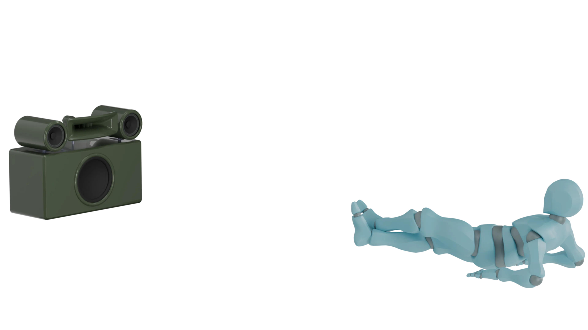

Current direction / Listen CloserOpen the current site ↗
New study / Sculptural Product × Listen CloserOpen the new study ↗
Sound takes many forms.
Explore the current Metorom site, then compare ten design studies and three earlier interactive versions.
五つのデザインで十の新しい表現を比較し、三つのインタラクティブなサイトもご覧ください。
Explore ten new studies See interactive versions ↓
METOROM / STUDY 001KYOTO, JAPAN
OBJECT / SOUND / SPACE01—03
Interactive versions.
Three earlier directions with the 3D speaker viewer, bilingual content, event pages, and sound controls.
01 / EDITORIALForm
& feeling.
& feeling.
01 / ATELIER
Warm, precise, editorial
Paper tones, fine rules, serif typography, and generous space.
Enter Atelier02 / INSTRUMENTSound
in motion.
in motion.
02 / SIGNAL
Technical and kinetic
Dark instrument panels, electric color, and an oscilloscope feel.
Enter Signal03 / CULTURALPaths
of sound.
of sound.
03 / JOURNEY
Expressive and exploratory
Deep blue, warm coral, layered shapes, and a sense of movement.
Enter Journey